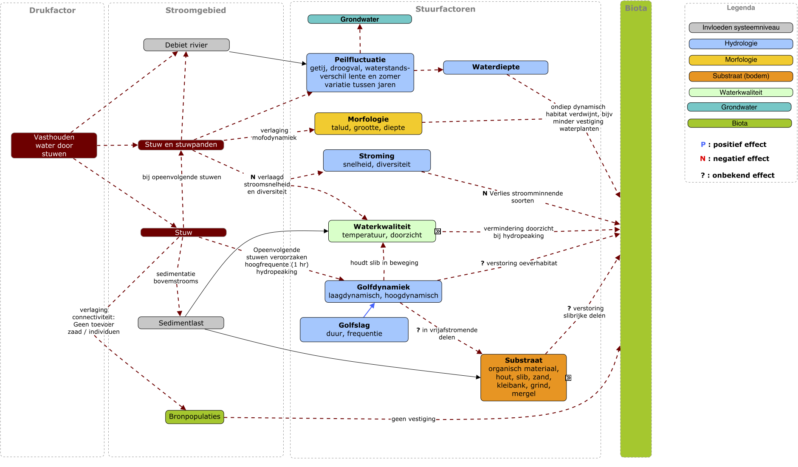

Introductie
Waarom een netwerk perspectief?
Veranderingen in de intensiteit van drukken, zoals klimaat of scheepvaart, beïnvloeden het ecosysteem via veel ‘routes’. In de figuur hieronder een voorbeeld van de complexiteit van interacties tussen een drukfactor (in dit geval stuwen) en de biota.
De veranderingen in stuurfacturen veroorzaakt door de drukfactoren hebben op individuele soorten een verschillend effect. Maar wat niet in deze figuur staat, is dat soorten ook onderling van elkaar afhankelijk zijn voor schuilgelegenheid (waterplanten/vis), voortplanting (gastheer) of de een is voedsel voor de ander. Het samenspel van drukken heeft een complexe relatie met voorkomen van soorten en soorten onderling beïnvloeden elkaars voorkomen en voortplanting. Hierdoor kunnen door veranderingen van drukken effect-cascades ontstaan in de ecosystemen. Of, bij herstel van ecosystemen, hoeft het wegnemen van een enkele druk, niet tot een geheel herstel van het ecosysteem te leiden.
Gevolgen
In het huidige beleid, inrichting en beheer van rivieren wordt die samenhang en onderlinge afhankelijkheid niet meegenomen in ‘operationele’ systeemkennis zoals: - bij het inrichten van uiterwaarden of riviertakken; - ecologische effect beoordeling van een functie-aanpassing (bijvoorbeeld meer/minder scheepvaart); - (voorspellende) modellen voor scenario’s van drukken / inrichtingsalternatieven voor het onderbouwen van beleidskeuzen.
Met de huidige staat van modellen (in gebruik voor RWS) kunnen we nu voorspellen dat een soort kan overleven, en tegelijkertijd voorspellen dat het voedsel van die soort niet overleeft. Het verband wordt niet gelegd, er wordt alleen naar de totale biodiversiteit gekeken. Zonder de samenhang mee te nemen kunnen de huidige voorspellingen kunnen onbedoeld positief uitpakken voor ecologie en zo tot verkeerde besluiten leiden.